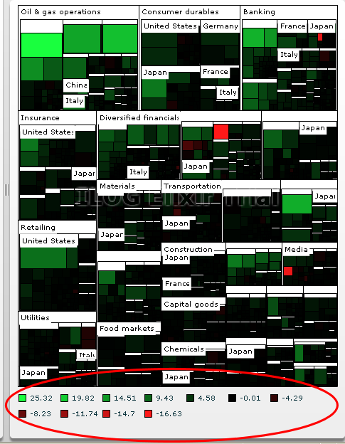

You can add a treemap legend to your application to display
which colors correspond to which values in the treemap. To do so,
you define a
TreeMapLegend control in MXML using the
<ilog:TreeMapLegend> tag as follows.
<ilog:TreeMap width="200" height="400" id="myTreeMap"
dataProvider="{myDataProvider}" />
<ilog:TreeMapLegend width="200" height="50"
dataProvider="{myTreeMap}" />
The
dataProvider of
the
TreeMapLegend references the
TreeMap control from which to display
the legend data.
You can customize the following properties in a TreeMapLegend:
The direction property to change the direction of the legend (horizontal or vertical)
The color style property to change the
text color of the legend
The font style properties to change
the text font of the legend
The labelFunction property which provides a formatting function to compute the text
of each legend based on the values in the treemap model
Example of treemap with legend
The following example shows a horizontal legend.
